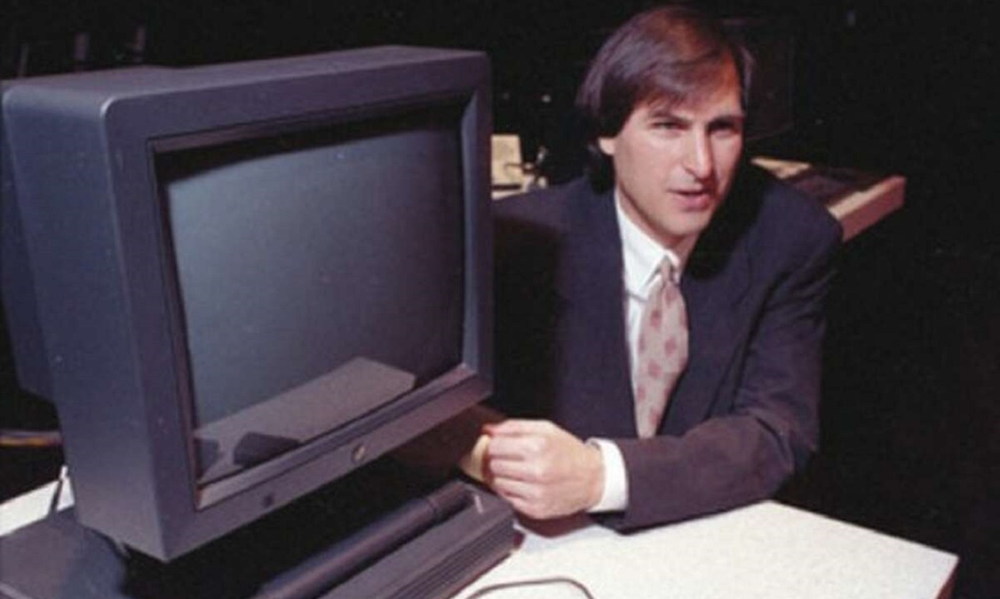

r
Apesar da notoriedade com que conhecemos Steve Jobs o seu lado explosivo e inconveniente para com a equipe. Sculley, ex executivo da Pepsi e representante do conselho favoreceu

Surgimento da Next Computer
Apesar da notoriedade com que conhecemos Steve Jobs o seu lado explosivo e inconveniente para com a equipe. Sculley, ex executivo da Pepsi e representante do conselho favoreceu
a “renúncia” de Jobs do cargo após quase uma década à frente da Apple. Com a promessa de fundar a própria empresa, acompanhado de alguns ex-funcionários da Apple e com um investimento de US$12 milhões
do bolso de Jobs, surgiu então em 1985 a Next.
Segundo Steve, o principal objetivo da Next era atender a área de pesquisa e o setor corporativo, produzindo tanto o hardware quanto software e deixando de fora os consumidores genéricos.
A ideia surgiu após um encontro com Paul Berg, reitor da Universidade de Stanford, que citou a necessidade de máquinas com um menor custo para testes de pesquisa
Apesar da notoriedade com que conhecemos Steve Jobs o seu lado explosivo e inconveniente para com a equipe. Sculley, ex executivo da Pepsi e representante do conselho favoreceu
a “renúncia” de Jobs do cargo após quase uma década à frente da Apple. Com a promessa de fundar a própria empresa, acompanhado de alguns ex-funcionários da Apple e com um investimento de US$12 milhões
do bolso de Jobs, surgiu então em 1985 a Next.
Segundo Steve, o principal objetivo da Next era atender a área de pesquisa e o setor corporativo, produzindo tanto o hardware quanto software e deixando de fora os consumidores genéricos.
A ideia surgiu após um encontro com Paul Berg, reitor da Universidade de Stanford, que citou a necessidade de máquinas com um menor custo para testes de pesquisa.